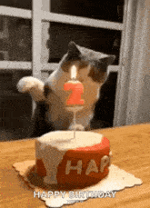

| 1. | 1999 erschien der Film „Matrix“ und hat die Welt der Science-Fiction für immer verändert. |
| 2. | Die Welt war gespannt auf den „Millennium-Bug“ und viele dachten, dass Computer zum Jahreswechsel verrückt spielen würden. |
| 3. | Der Euro wurde als Währung eingeführt, allerdings erstmal nur für elektronische Zahlungen in 11 europäischen Ländern. |
| 4. | Pokémon war auf dem absoluten Höhepunkt – Millionen Kinder weltweit waren im Sammelfieber. |
| 5. | DVDs begannen, die gute alte VHS-Kassette abzulösen. Es war der Anfang vom Ende für Videotheken! |
| 6. | Britney Spears hat mit „...Baby One More Time“ die Charts dominiert und wurde zur Pop-Ikone. |
| 7. | Und das Beste: Emma Bahr wurde 1999 geboren – und das ist wohl das Super-Tollste überhaupt! |
Diese Website wurde mit Liebe von Daniel erstellt.
Besucherzähler: